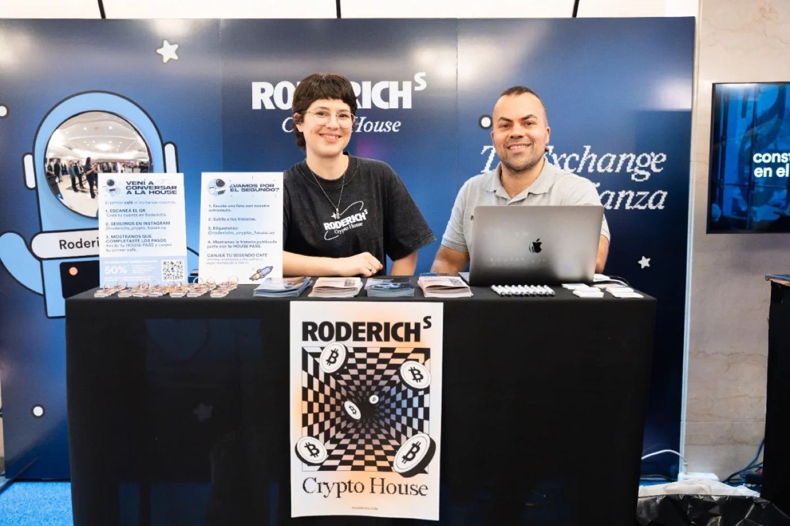
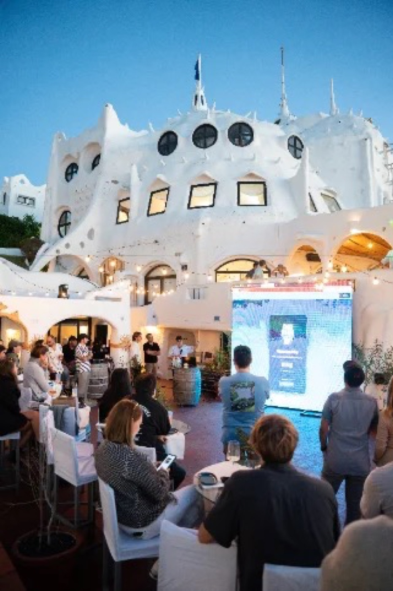
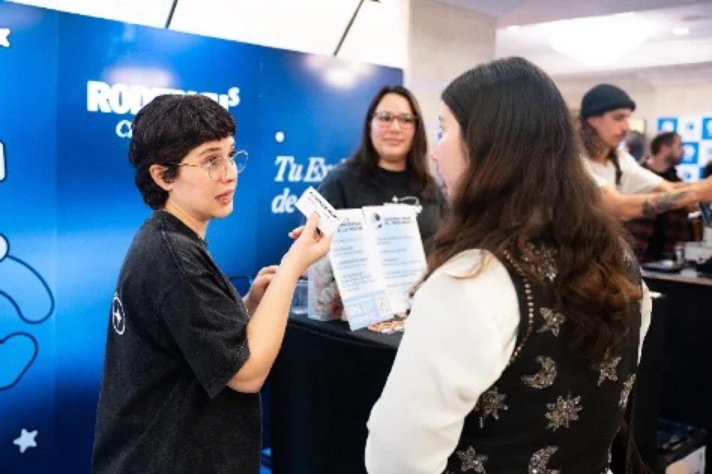
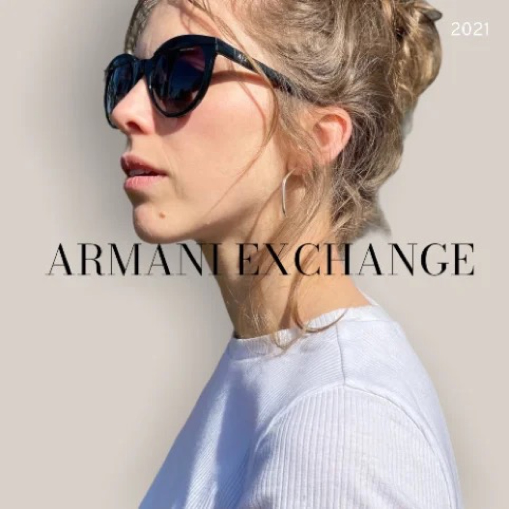
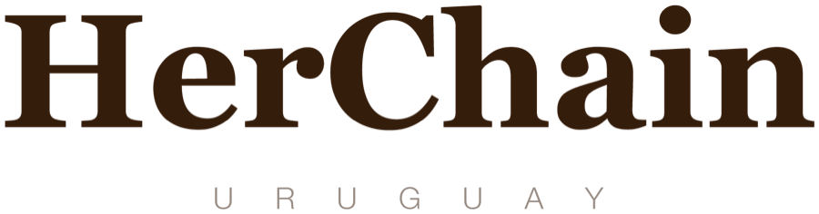
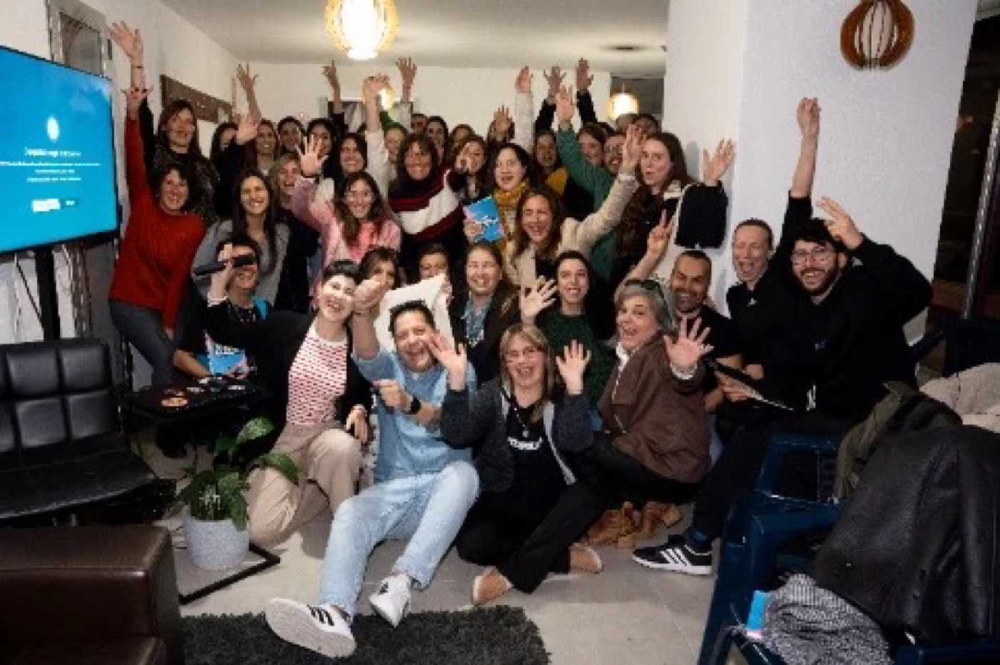
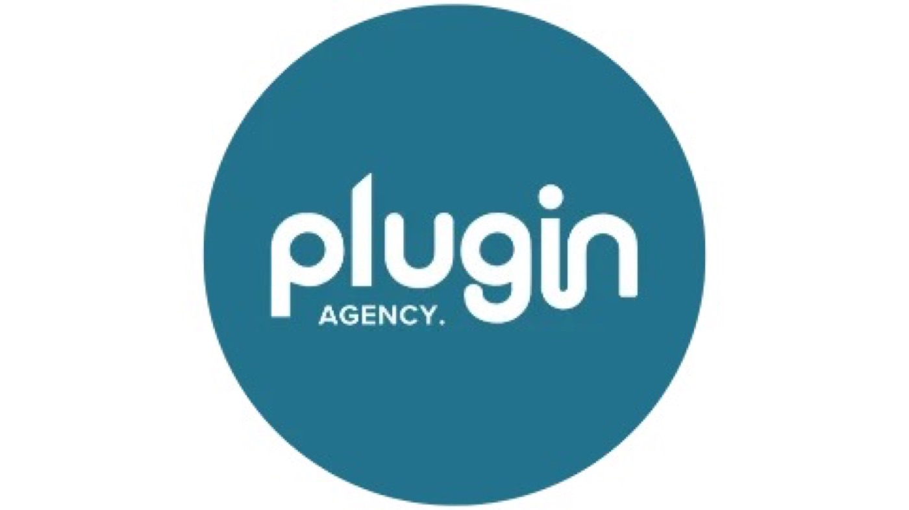
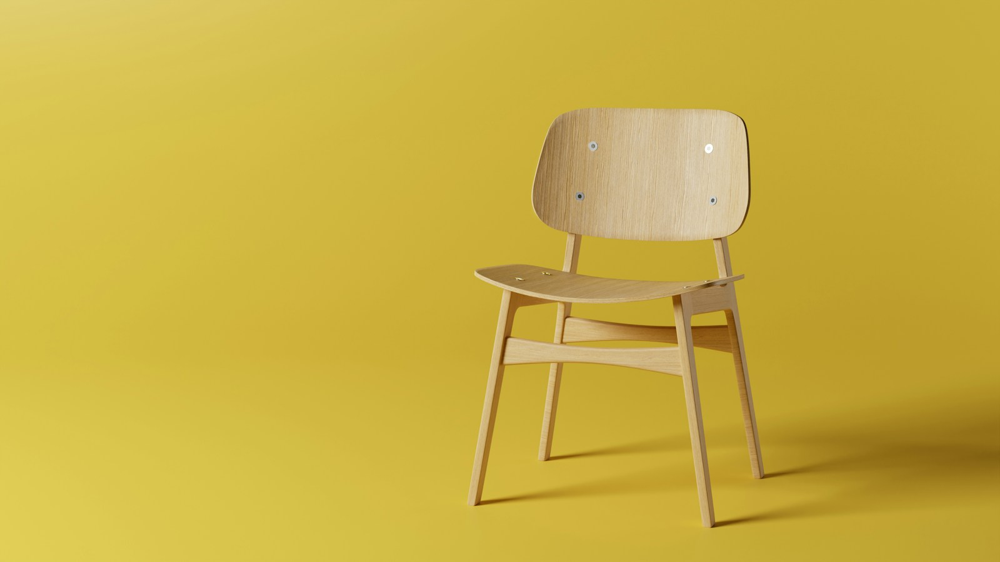
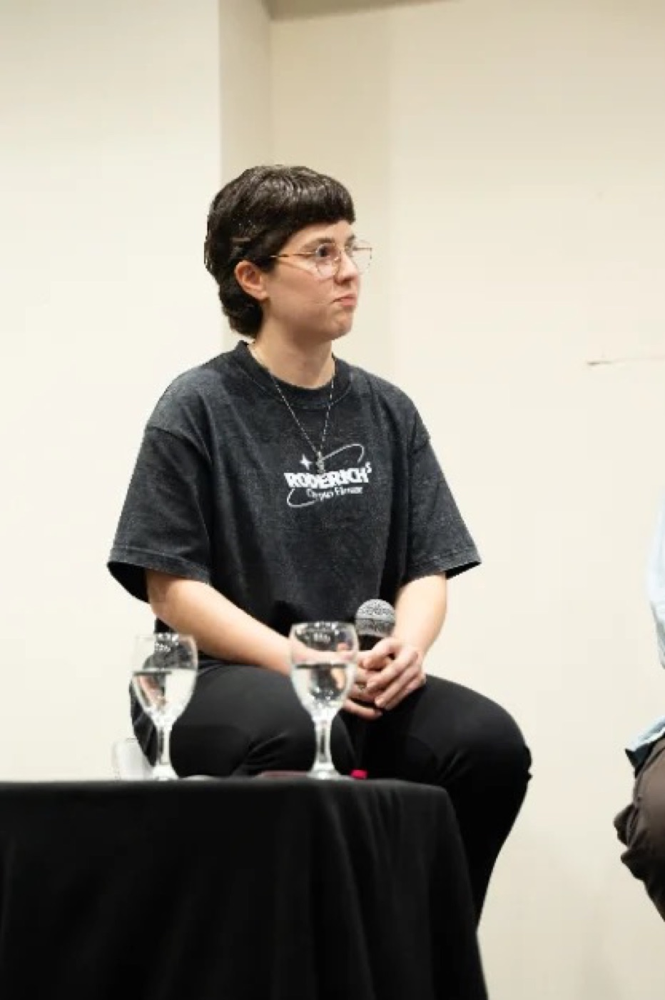

2021 – 2026
Roderich's
Estrategia, contenidos, dirección creativa, campañas, eventos y comunidad. Cinco años dentro de la marca.
Creative & Brand Strategist · Cytrine Studio
Ayudo a marcas y emprendimientos a encontrar una forma propia de verse, hablar y conectar.
Trabajo entre identidad, contenido, redes y marketing para transformar buenas ideas en marcas con personalidad.
TrabajemosCinco marcas, desde adentro: estrategia, contenido, imagen y comunidad.



Estrategia, contenidos, dirección creativa, campañas, eventos y comunidad. Cinco años dentro de la marca.

Gestión integral de marca: redes, foto y video. Lentes de sol y accesorios, Montevideo.
Cosmética natural. Producto, identidad, contenido y redes, de punta a punta.


Mujeres en el ecosistema cripto en Uruguay. Nació de Crypto Talks for Her: concepto, producción, speakers y comunidad.

Propuestas de marca para su proyecto de agencia.

Si Cytrine fuera un verbo, sería ser.— Yen

Me gusta trabajar cerca de las marcas, entender qué hay detrás de cada proyecto y encontrar la mejor forma de llevarlo hacia afuera.
Vengo de Bellas Artes y con los años fui sumando herramientas de comunicación, contenido y marketing. Esa mezcla entre sensibilidad y estrategia atraviesa mi manera de trabajar.
Pienso conceptos, escribo, saco fotos, grabo, edito, gestiono comunidades y desarrollo campañas. Según el proyecto, también trabajo junto a otros perfiles creativos para llevar una idea más lejos.
Cytrine nació como mi alter ego artístico, un espacio para crear sin máscaras. Hoy es también mi estudio.
Concepto, personalidad, universo visual, tono y criterios de comunicación.
Ideas, textos, reels y carruseles para contar qué hace especial a una marca.
Estrategia, planificación, creación y gestión cotidiana de redes.
Concepto, producción, fotografía, grabación y edición para redes.
Campañas, Meta Ads, Google Ads y análisis de resultados.
Trabajo cercano con marcas que están naciendo o buscando ordenar su identidad.
Concepto, comunicación y presencia de marca en eventos y activaciones.
Comunidades, educación, alianzas: creatividad, comunicación y ejecución juntas.
Acá van a vivir mis reflexiones sobre marcas, procesos y lo que hay detrás de las cosas.
El primero está en proceso.